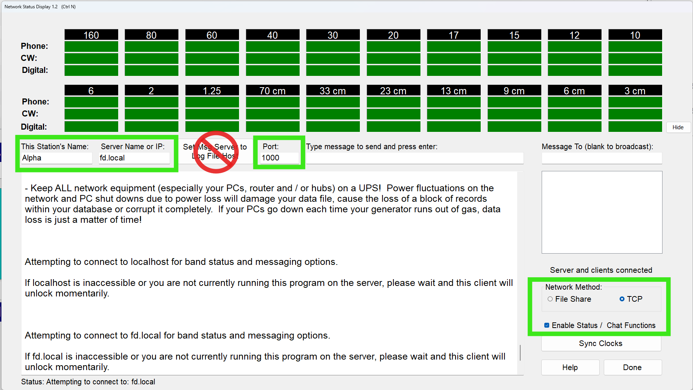

Get your N3FJP logging PCs ready to share the event log with Field Day Commander.
Keep the logging program your operators know, and connect it to Field Day Commander using N3FJP's own TCP networking. This guide covers N3FJP's ARRL Field Day Contest Log and Winter Field Day Contest Log, with setup and checks to work through before the weekend or while you're getting the site ready.
Have Field Day Commander installed and your event set up and active with the right dates. For a check before the weekend, use a practice event whose dates and times cover the test. A contact outside the active event's window will be refused.
Put every logging PC on the same club LAN as the server. N3FJP networking doesn't have a password. Anyone who can reach its port can add, edit, and delete contacts, so keep it on the LAN and never forward the port from the internet.
Open TCP port 1000 on the server's firewall. With UFW, use sudo ufw allow 1000/tcp. The deploy script doesn't open external logger ports. If you choose a different port, use that number in the firewall rule too.
Docker publishes the port through N3FJP_PORT, which defaults to 1000. Helm uses a hostPort, so give the PCs the node's IP address.
You can create a station for each PC on the Stations page now, using the names you'll enter in N3FJP. It's optional, but it gives you a chance to sort out station names before testing.
Check each PC's clock while you're at it. Field Day Commander checks contact times against the event's dates and times, and it ignores N3FJP's Sync Clocks button. Set the clocks correctly on the PCs themselves.
1000. If you need another port, change it while the server is off.Look for Serving port 1000, or the port you chose. The card also shows the number of connected PCs, message and error counts, and uptime. Expand Last Contact Received after a test contact to see its details and an Accepted result or the reason it was refused.
If the server can't start, the reason appears in red. A bare-metal installation that hasn't run update.sh since this feature was added may not be able to bind port 1000. Run update.sh to apply the needed change, then use Restart Listener to retry right away.
Any contacts already in the event will be sent to each PC when it connects. You don't need to copy the log to the laptops first.
Get the logging PCs connected and test the network before Field Day weekend, or while you're setting up at the site. Point every N3FJP PC at Field Day Commander, including the PC you previously used as the server. Field Day Commander takes its place. Every PC now needs to be a TCP client. Don't configure any of them as a server or use File Share.
On each PC, open the Network Status Display from Settings > Network. Some N3FJP programs put Network on the main menu instead. Work through these settings:
1000. If you've changed it, put the same port in both places.You can leave Set Msg Server to Log File Host as it is. That setting belongs to File Share networking.

Give it about a minute to connect. Watch for "Attempting to connect to ..." to disappear from the status line, followed by "Retrieving full log via TCP, please wait..." as N3FJP downloads the whole event log. As you test the stations, check the band grid too. It should show the other stations, including those operating in Field Day Commander.
Still waiting? Clicking in Server Name or IP stops the connection attempt, so you can fix the setting there. Tick Enable Status / Chat Functions again when you're ready to retry.
Before you move to the next PC, fill in your club's own call, class, and section in N3FJP's setup. Those don't get shared between PCs, so you'll need to enter them at every keyboard.
With the PCs configured, go back to the N3FJP card in Field Day Commander. The connected-PC count should match the number you set up. Use your practice event for these checks, with its dates and times covering the test.
Edits and deletes made in N3FJP are recorded in Field Day Commander's audit log with the PC's name and IP address. You can check that record as part of the test too.
If Field Day Commander's N3FJP card shows fewer PCs than you expected, check the missing PC's Server Name or IP first. Then compare its port with the card and check the server's firewall.
Watch for two settings that can undo the setup: This Station's Name must differ from Server Name or IP, or N3FJP makes that PC a server. A PC left on File Share or configured as the server will also break this arrangement. Every PC must be a TCP client.
If a test contact is refused, N3FJP shows a chat message beginning "Field Day Commander:" with the reason and puts the contact back in its entry boxes. It may also report that the server is taking an unexpectedly long time. Read the chat message first. Check for a PC clock that puts the contact outside the event's dates and times, an invalid callsign, or an HF contact assigned to the free VHF station.
If contacts appear under the wrong station, or a new station appears during the test, compare This Station's Name with the station name and hostname in Field Day Commander. A name that matches neither will create a station.
Don't use matching score totals as the connection test. N3FJP and Field Day Commander can score the same log differently. For example, N3FJP counts SSTV as phone, while Field Day Commander scores it as digital. Use Field Day Commander's score and Cabrillo when you prepare your submission.